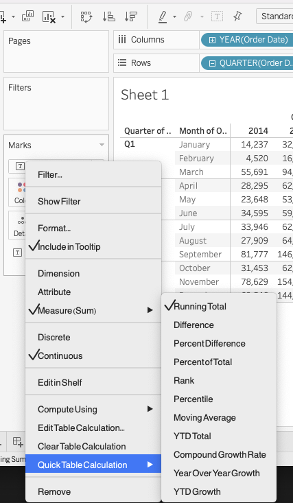
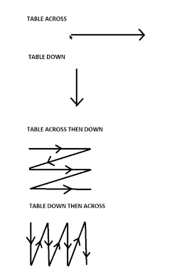
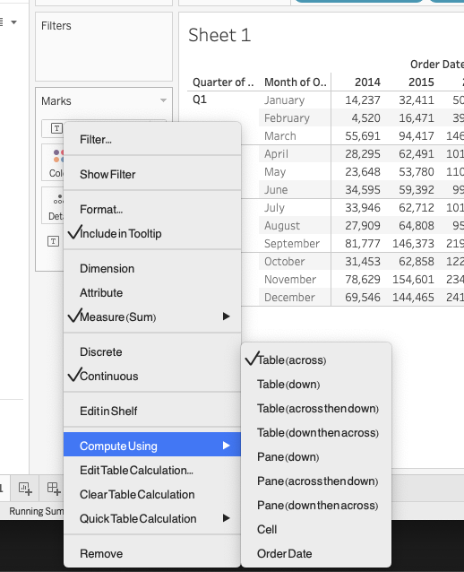
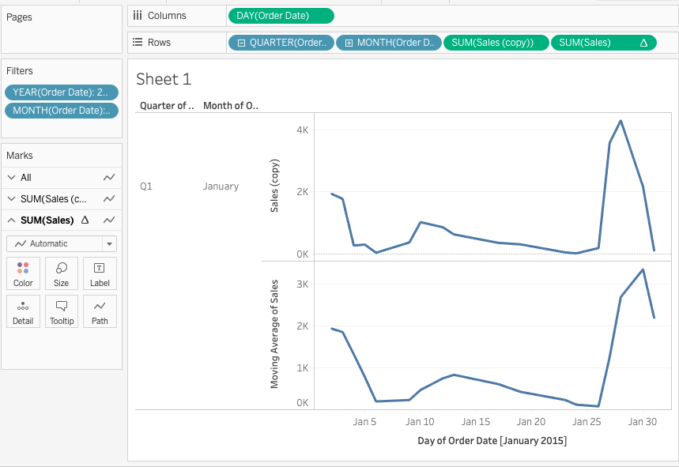
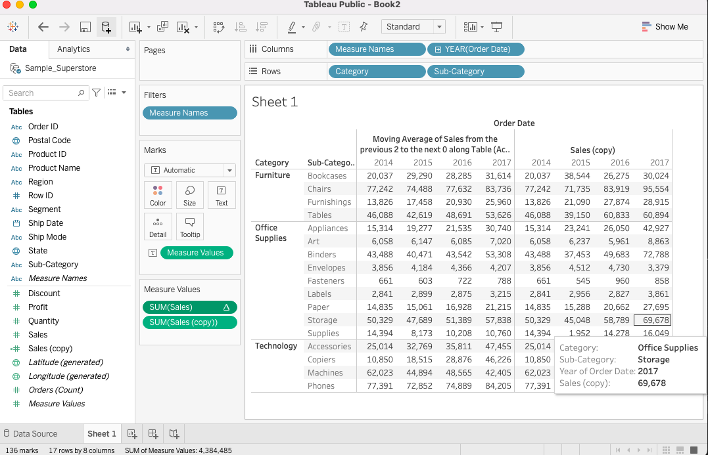

There are many number related, string related, date related inbuilt functions are listed out inside calculation creationg field.
Click on left-popup of ‘create calculation field’ and search for in-built functions.
Quick table calculations are the most frequently used calculations.

- Quick table calculations can be found on any measure that is present in detail or filter area.
- Click on the dropdown of the measure -> Quick-table calculation -> Select any
Not sure what a measure is!!
Click here!
Steps:
- Create a table in your worksheet. (Year)Order Date vs OrderDate(Year-Quarter-Month hierarchy)
- Remove year of order date in the rows shelf.
- Fill any measure (sales) by dragging drop to “Text” box in the graph.
- Click on dropdown of any measure, select ‘Quick Table Calculation’->Running Total
- Create another column with same plot to compare original vs calculated table. So for that click on measure Sales-> Duplicate-> Drag and drop sales(Copy) to the table in graph area.
If there’s a delta near any measure, it means it has some quick table calculation.
There are four ways to choose Quick calculations direction.

Table across direction starts calculation from left most value to the right most value.
We can select the direction by clicking on quick table calculated field’s dropdown -> Compute using -> Table across/down.
When we go with variance and SD as aggregations, we compute using cell.-TALK MORE IN THIS ARTICLE
Once we add a quick calculation to any measure, we can then get "Compute Using" in the dropdown of the measure.

If we compute using date, we will compute across dates and carry the sum(sales) to next year. It is similar to table down and across.
Experiment using Difference- Try choosing relative to ‘prev’ or next or first or last - its first col for table across and its first row for table down.
Experiment using Percent of differences - For table across- each cell is ((right-left)/left )*100
Try it !!
How to get row/column wise totals in a table?
Click
here!
Percentile type=> Table down -> highest val in col will be 100% and the least val in col will be 0%
Moving average
Moving avg is used to smooth out the fluctuations in data by calcuating an avg within a given period of time.
- New sheet-> plot Year vs Sum(sales)
- Make it continuous and day wise.
- Drag and drop another sum(sales)-> Click on drop down -> Quick calculation-> Moving average
- Plot new sheet -> Year-drill down to Day. Now for the sake of simplicity, let’s examine the movng average in Jan 2015. create a filter with order date drag drop to filter area. and select Year 2015 only. Next add another filter (Drag-drop) and select only Jan month.
- Now duplicate Sales column and drag and drop it to the row/col the moving average sales is in.
- We can now compare the moving average and normal curves.
- 
Let's see how moving average works in numeric tables.
Plot the graph as below by selecting moving average on Sales column.

We can see that the moving average is calculated using 'table across'.
Note: We can always edt the quick table calculationg by Clicking drop down -> Edit Table calculation.
Year to Date Total
In the same table of Year vs Quarter+Month with Sum(Sales) as column values, we can choose YTD calculation over SUM(Sales). Then it calculates sum yearwise in a table across/down manner.
Compound growth rate
Calculated in a tbale down/across manner monthwise in a year. Didnt understand how first row in Year 2015 was calculated.
Year by Year Growth value
YearbyYear Growth Value = ((LargerYear - SmallerYear)/SmallerYear)*100
- Plot Category+Subcategory and drag sales into text field of graph.
- Click on quick calculated sales dropdown -> Edit Table Calculation ->Select ’Specific Dimensions’ under ‘Compute Using’.
- Select sort order->Custom sort-> Select Sales and sum in both the dropdowns. Select ascending or descending.
- If we select ascending, then the running sum of sales will start from the least sum(sales) value (Fasteners and goes to next least value that is labels and adds up fasteners value to the running total)